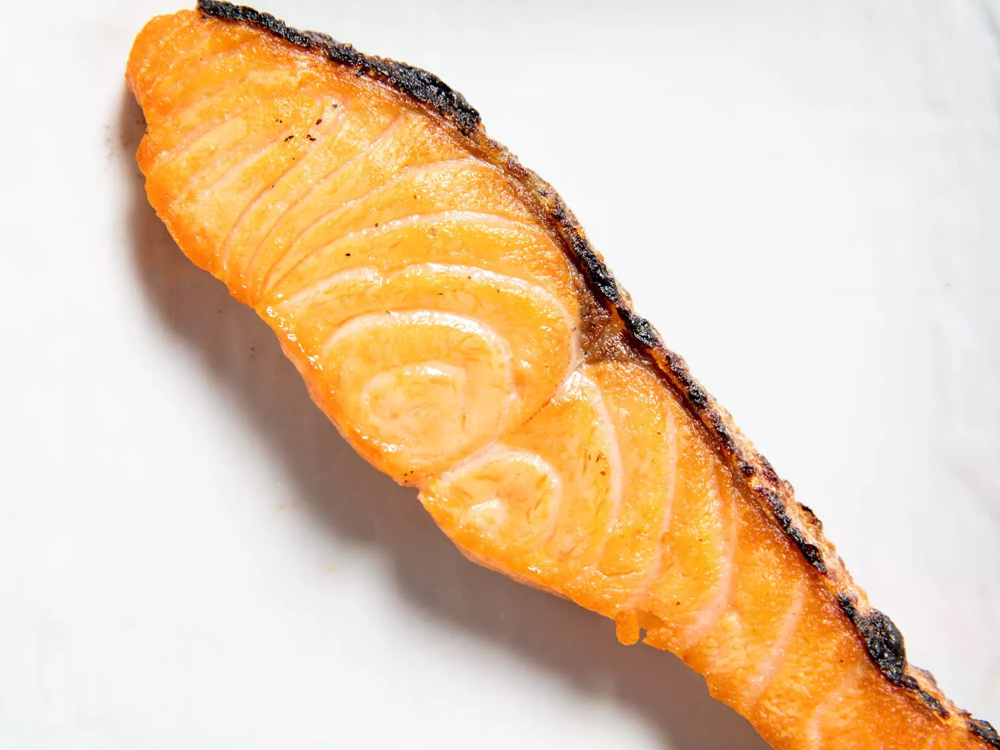

Japanese Style Salted Salmon

Description
Salted salmon, or shiozake (often shortened to shake), is a staple of the Japanese breakfast table and has been since time immemorial. While salted salmon is readily available for purchase in Japanese supermarkets, it can be difficult to find in the United States. This recipe approximates the flavor and texture of Japanese salted salmon by curing the salmon and letting it rest in the refrigerator on paper towels overnight. Serve the salmon with plenty of white rice, miso soup, and pickles, as well as any other dishes you have lying around that seem appropriate.
Ingredients
- 1 tablespoon (15ml) sake
- Two 4-ounce skin-on fillets of salmon, preferably cut from the belly
- 2 teaspoons Diamond Crystal kosher salt (about 1/4 ounce; 7g)
Steps
- Sprinkle sake, if using, all over salmon fillets. Pat dry with paper towels. Sprinkle salt evenly all over both fillets. Press salt into the flesh and skin to ensure it adheres well.
- Place salted salmon fillets in a glass container, such as a small glass baking dish, lined with paper towels. Cover container and refrigerate overnight, or up to 36 hours. Every 12 hours, replace paper towels and flip fillets over.
- When ready to cook, place oven rack in top position and preheat broiler. Place salmon fillets on a foil-lined rimmed baking sheet. Broil salmon until it has exuded some fat and started to brown, about 3 minutes. (The timing will vary depending on broiler strength and distance from the broiler element.)
- Turn salmon fillets over and cook until salmon is nicely colored and fat is spitting, about 3 minutes longer (see note). Serve immediately.